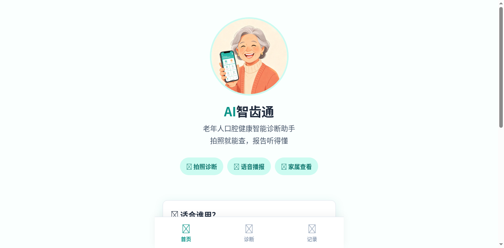
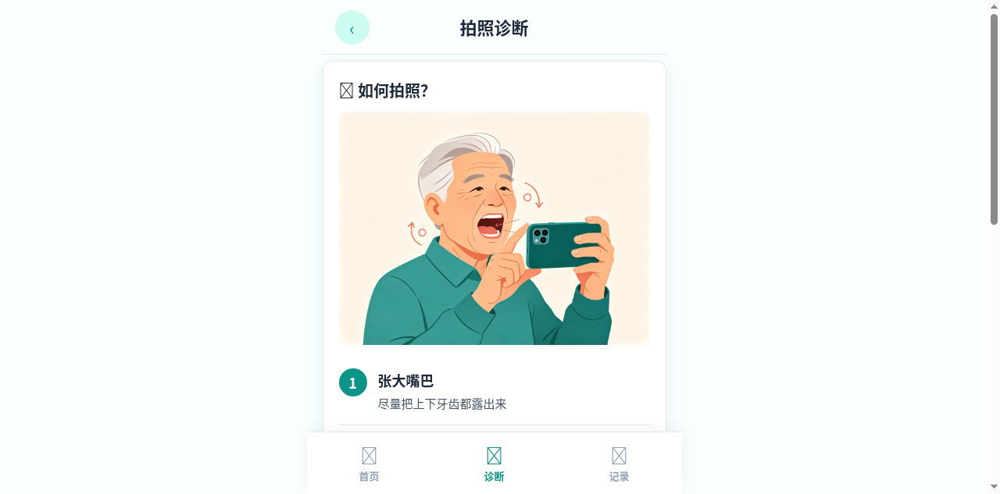
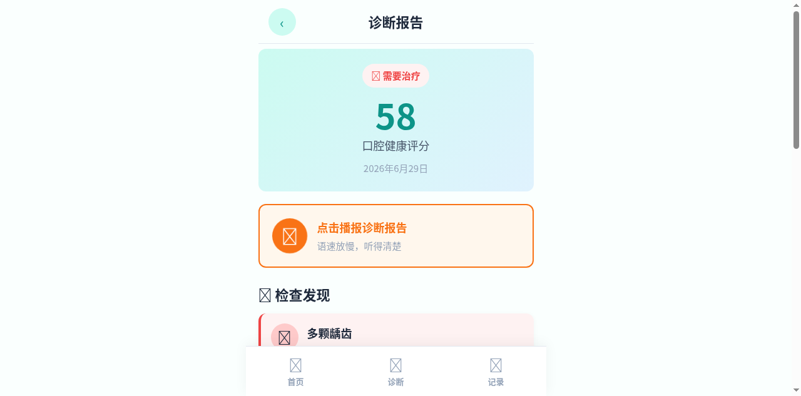

老年人口腔智能诊断小程序
初赛提交文件
AI智齿通是一款面向老年人的微信小程序原型（本次以可交互HTML Demo形式呈现），通过上传3张不同角度的口腔照片或10秒口腔特写短视频，即可获得AI口腔健康初步评估报告，支持大字体显示和一键语音播报。
核心用户：60岁以上老年人，尤其是以下群体：
上传3张不同角度口腔照片或10秒特写视频，AI自动分析牙齿和牙龈状况
诊断报告支持一键语音播报，语速放慢30%，视力不佳也能"听"懂
自动保存每次诊断结果，方便老人和家属长期跟踪口腔健康变化
本Demo为纯前端交互原型，无需安装，用浏览器打开即可完整体验所有功能。建议在 Chrome 或 Edge 浏览器中打开以获得最佳语音播报效果。
作为一名口腔临床副教授，我在门诊中频繁遇到老年患者因"看牙太难"而延误治疗的情况。很多老人并非不重视口腔健康，而是挂号排队体力跟不上、距离太远走不动、不会用智能手机预约。如果能让他们在家就能做一个初步的口腔健康评估，也许能挽救很多本可以早期治疗的病例。
中国65岁以上老年人口超2.8亿，其中75%存在牙齿缺失，但口腔就医率不足30%。这是一个真实的、庞大的社会痛点。同时，随着AI图像识别技术的成熟，口腔疾病的视觉特征（龋齿黑斑、牙龈红肿、牙结石堆积）恰好适合用AI辅助筛查。用AI降低筛查门槛，用适老化设计消除数字鸿沟，是这个方向的核心价值。
AI智齿通同时命中社会服务赛道和社会公益附加赛（智慧助老方向），可双线获奖。选题聚焦"2.8亿老年人看牙难"这一真实社会痛点，切口具体、人群明确，直击评审最看重的社会价值维度。
创意来源于真实的门诊经历，而非虚构场景。创作者具备15年+口腔临床经验，对老年患者就医困境有第一手观察。这种"医生做医疗产品"的专业壁垒，是其他参赛作品难以复制的差异化优势。
设计遵循WCAG AA无障碍标准，所有可点击区域最小56px、颜色对比度≥4.5:1。但更深层的是"零学习成本"理念：语音全程引导、大按钮一步操作、底部导航永不迷路。这不是技术实现问题，而是对老年人认知特点的深度理解。
支持3张不同角度照片或10秒口腔特写视频两种输入方式。视频模式可捕捉动态特征（牙齿松动、牙龈出血），弥补静态照片的局限。这一设计体现了对不同使用场景（手抖拍不清 vs 能自主操作）的包容性思考。
| 对比维度 | 通用口腔APP | AI智齿通 |
|---|---|---|
| 目标用户 | 全年龄段 | 60岁+老年人（精准聚焦） |
| 核心功能 | 在线预约、挂号 | AI初诊筛查（降低就医门槛） |
| 语音播报 | ❌ 无 | ✔ 一键语音播报，语速-30% |
| 适老化设计 | ❌ 标准UI | ✔ 超大字体+高对比+大按钮 |
| 家属远程查看 | ❌ 无 | ✔ 子女绑定，跨地域关怀 |
| 紧急就医提醒 | ❌ 无 | ✔ AI检测严重问题自动预警 |
本作品并非将TRAE仅当代码生成器，而是创造性利用TRAE的全流程AI能力：
用自然语言描述需求，AI生成4张高质量插图和3张医学示例照片，无需设计能力即可获得专业级视觉素材。
通过多轮对话逐步完善产品——从需求分析到交互设计到代码实现，每次迭代都有明确方向，体现AI辅助下的"思考-实现-验证"闭环。
使用TRAE内置浏览器工具逐页截图验证UI，确保适老化设计规范落地（字体大小、按钮尺寸、对比度），开发即验证。
通过AI搜索获取最新行业数据（老年人口腔健康统计）和竞品信息，确保方案中的数据有据可查、设计有理有据。
确定适老化设计规范——超大字体（标题32px+、正文18px+）、高对比度配色、大按钮（最小56px高）、语音播报支持。规划5个视图：首页、拍照、AI分析、诊断报告、历史记录。
使用 TRAE 的 GenerateImage 工具生成4张素材图：首页欢迎插图、拍照引导图、3张示例口腔照片（分别对应不同健康状态）。
单文件HTML方案，纯CSS+JS实现所有交互：页面视图切换、示例照片选择、文件上传、AI扫描动画（进度条+日志）、诊断报告生成、Web Speech API语音播报、localStorage历史记录。
使用 TRAE 浏览器工具逐页截图验证UI效果，根据适老化原则调整字体大小、按钮尺寸和配色对比度。修复示例图片引用问题，优化语音播报体验。



以下为使用 TRAE 完成 Demo 开发的关键对话 Session ID，用于证明作品由 TRAE 开发完成：
* Session ID 为每段对话任务的唯一标识，可在 TRAE 对话列表中查看验证。
下方为可交互Demo，您可以直接在页面中体验完整的诊断流程。点击下方按钮进入全屏体验模式。